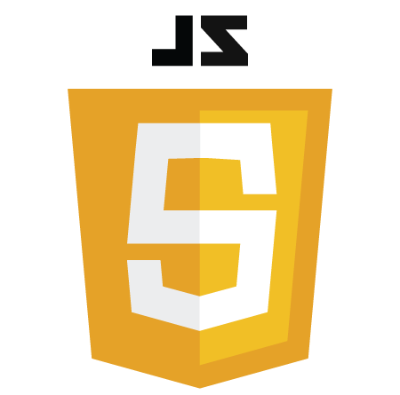
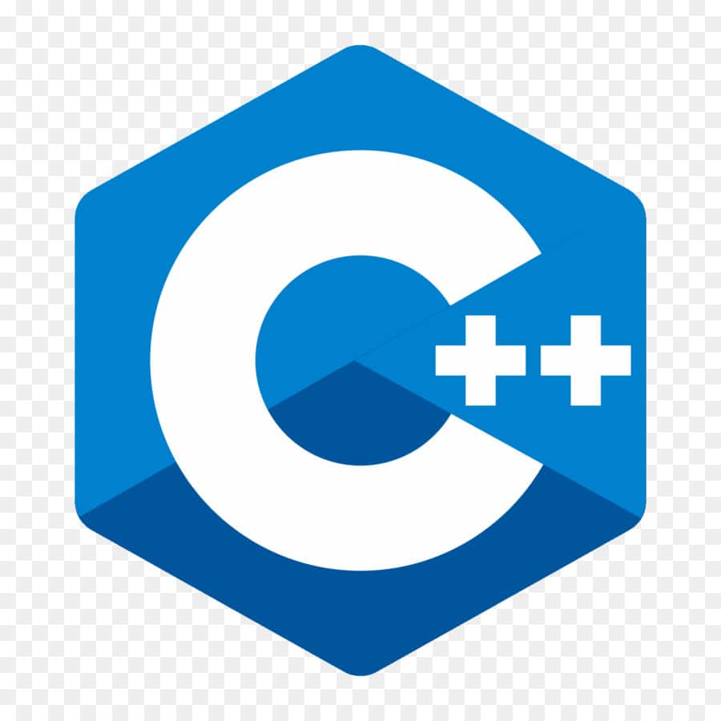

Języki w których pracuję
JavaScript
JavaScript
JavaScript uczę się od dwóch lat. Jest to jeden z moich ulubionych języków przez to jak ciekawie można go wykorzystać chociażby do animacji.
c++
C++
C++ był jednym z pierwszych języków w których programowałem dlatego jestem z nim całkiem dobrze obeznany.
Python
Python

Python jest jednym z języków który ciekawi mnie najbardziej. Początkowo sprawiało mi problemy to jak prosty jest, jednak teraz gdy dostrzegam jego możliwości jestem podekscytowany.